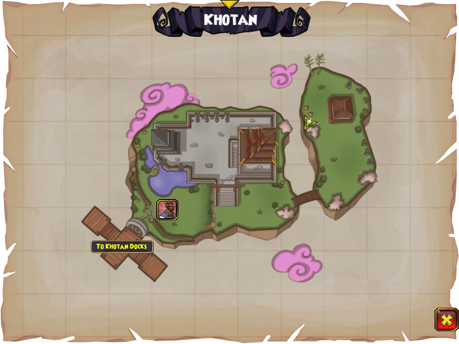

Dock connections
These areas are simply connected. In Khotan Skyway, you can find this dock, which connects to Khotan, which is a long dungeon by the way.

Zeke Quest Info: Khotan Knife

The knife is on the smaller island behind a tree on the left side.
General Tso Drops
The following drops come from General Tso, the final fight of Khotan. They are good for stitching. General Tso is a harder boss. To win, I suggest only focusing on one enemy that is guarding the chicken and using doubloons.
General Tso's Helm


General Tso's Kote


General Tso's Boots


General Tso's Blade